第1课时｜45分钟
女装设计 III · 第16周
第16周｜最终考核、答辩与反思
期末考核不是审美偏好的终局裁决；它依据公开标准审视主题、形式、当代女装价值、整体造型、市场定位和系列系统，并把反馈转化为下一阶段能力目标。
用官方六项标准检验主题、要素、当代审美、造型、市场与系列完整度
怎样让最终评审既看见设计结果，也看见每个结果背后的判断、证据与成长？
Jacquemus · 2027春夏成衣同一系列5套｜用于首轮观察
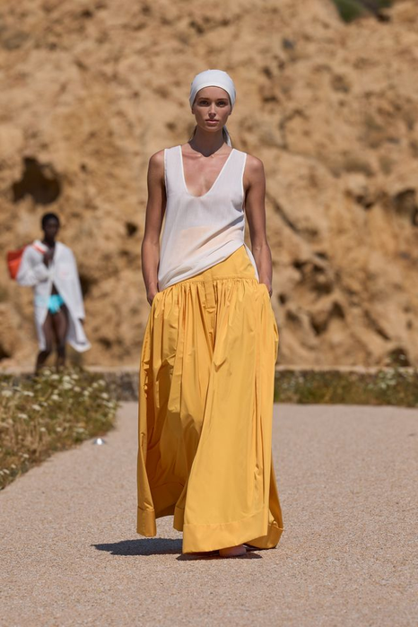
01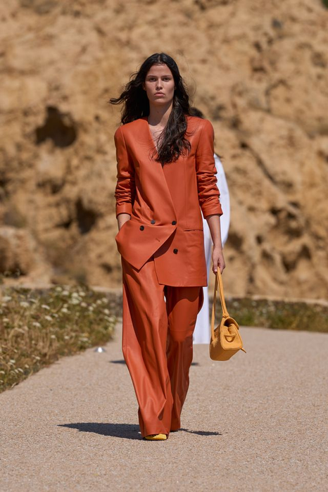
02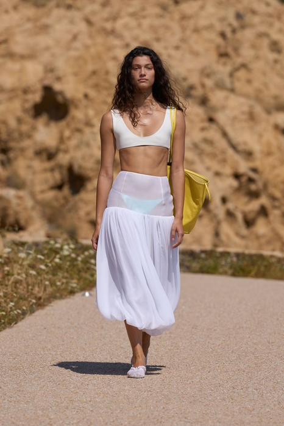
03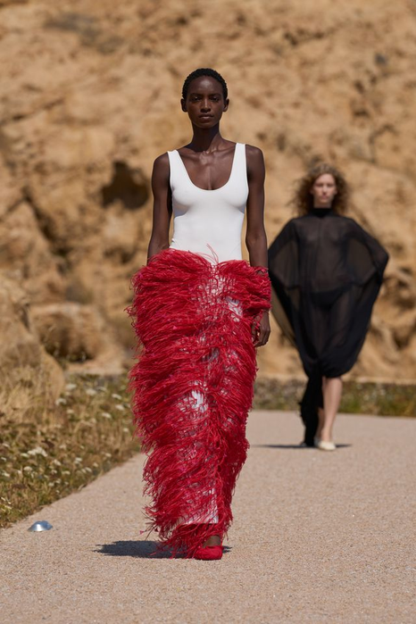
04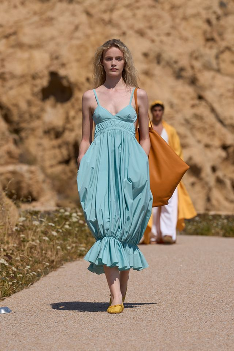
05图像：Jacquemus 2027春夏成衣｜课堂反向分析，不代表品牌官方版型说明。
常量｜同一片自然光五套在同一时段、同一沙地上拍摄，颜色强弱可以直接比较，不受打光影响。
变量｜每套只有一个主色黄 → 铁锈 → 白 → 红 → 湖蓝。没有任何一套同时用两种强色。
变量｜品类跨度背心＋长裙 → 西装套装 → 内衣式上衣＋气球裙 → 上衣＋流苏长裙 → 连衣裙，五套覆盖四个品类。
角色｜梯度04 形象款；02 引流款（可通勤）；01·05 过渡款；03 展示款（强度最高、可穿性最低）。
十六周课程路径女装设计 III · 第16周 · 第1课时｜45分钟
十六周不是孤立主题，而是一条连续的设计证据链
前8周建立方法并完成中期验证；后8周深化春夏与秋冬系列，最终独立完成主题系列与答辩。
01–04判断与定位
05–08提取与验证
09–12季节系列开发
13–16独立项目与考核
已完成本周后续
第1课时｜45分钟
女装设计 III · 第16周
03 学习目标
最终考核、答辩与反思要形成四项可见证据
不是听懂概念，而是让判断进入图、样片、系列编排和编辑记录。
第1课时节奏衔接与目标5′大纲与考核依据4′词汇·模型与案例2′院校案例3′考核31′
关键判断
成果完整呈现；基于证据的答辩；官方六项终期评价；批评吸收与学习迁移。
主要难点
在有限陈述时间内准确证明设计价值，并把不同评委意见区分为事实观察、标准判断和后续建议。
当周成果
完成期末实践考核与答辩，获得六维评分证据，并形成可执行的个人设计能力发展计划。
提交要求
提交最终系列全套、答辩材料、评分与反馈归档、800—1000字反思及下一项目行动表。
体例对照本页的“关键判断”即教学重点，“主要难点”即教学难点，“提交要求”即本周提交规格，“当周成果”是它的产出清单。 学情大二，已完成第01—15周，手上有精编作品集、五款编排板与3分钟陈述稿。
第1课时｜45分钟
女装设计 III · 第16周
第15周→本周
今天不从零开始——上周编好的两样，今天就是评分对象
第15周回答“怎么把它讲清楚”；本周回答“它值多少分，证据在哪一页”。
第15周带来的
本周变成
在哪一页用
精编作品集（8–12 页，页序不再变动）
评委翻阅的唯一材料——现场不再补页
终期陈列 / 评分证据定位
五款编排板
“系列应用”逐款提问的对象——五个位置，五个答案
系列应用
陈述稿（3分钟，背到能脱稿说）
正式陈述用的就是它——每人3分钟，不超时
第1课时实操
术语衔接第15周的“陈述稿”在本周就是“正式陈述”的稿子；“精编作品集”的页序不再变动——今天评委问“证据在哪一页”时，你要能立刻翻到。
开场 2 分钟摊开精编作品集、五款编排板与陈述稿 → 在作品集目录上标出六项标准各自对应的页码 → 今天不再修改作品，只回答“证据在哪一页”。
第1课时｜45分钟
女装设计 III · 第16周
04 大纲对照
今天的评分，直接来自大纲原文
下面五项来自《25级〈女装设计〉课程大纲》与《考核大纲》，说明今天的分数由哪些条文决定。
课程目标 1—3
今天一次性检验三个目标：审美判断、设计能力、产品思维。
哪一项弱，反思里就要写清楚是哪一项。
三大考核内容
“美学原理”“系列女装设计”“主题设定与元素提炼”，今天全部到场。
陈述的四段结构，就是按这三块排的。
期末实践｜60%
现场按六项标准（10/10/20/20/20/20）打分，占总评 60%。
六项同时计——不能靠一项拉满补别的。
平时成绩｜40%
第1—15周的作业、样片与修改日志已经计入，今天不再变动。
过程分是这学期一点一点攒出来的。
标准参照
按公布的标准评分，不按同学之间的排名。
所以“比别人好”不是理由，“对到标准哪一条”才是。
第1课时｜45分钟
女装设计 III · 第16周
05 考核依据
期末评分只使用六项公开标准
学生先自评，再答辩；教师用同一语言记录证据。
10分
时代性与创意
主题回应当下，并形成自己的问题与立场。
10分
趋势性与元素
提炼的设计元素与当季趋势、审美和来源一致。
20分
当代女性适配
款式回应身体、动作、场景与真实穿着需求。
20分
整体造型美感
比例、色彩、材料与细节共同形成完整造型。
20分
市场与定位
顾客、价格、品类和使用情境边界清楚。
20分
统一与丰富
风格统一，同时具有角色、搭配与造型变化。
第1课时｜45分钟
女装设计 III · 第16周
06 答辩证据
每一个判断都必须指向一页、一件样衣或一次实验
“我觉得”不能代替研究来源、修改记录、产品定位与身体证据。
研究证据
来源、观察、问题与命题清楚。
评委会问：这个观察从哪儿来的？什么时候记的？
发展证据
草图、变体、删除与保留理由可追踪。
评委会问：这一版为什么被删了？下一版凭什么更好？
技术证据
技术平面图、材料、样片与样衣互相对应。
评委会问：这个结构做出来过吗？照片在哪一页？
产品证据
顾客、品类、搭配、价格与场景有边界。
评委会问：谁会买？什么场合穿？大概什么价位？
第1课时｜45分钟
女装设计 III · 第16周
07 核心词汇
先建立准确理解，必要的行业术语再保留英文
术语必须能够指导一个动作或判断。
终结性评价｜Summative Assessment
依据公开课程目标与评分标准，对最终综合成果进行的结构化判断。
证据式答辩｜Evidence-based Defense
以研究、实验、技术、穿着与市场资料支持回答，而非重复概念口号。
标准参照｜Criterion-referenced
按预先公布的质量标准评分，而不是按同学之间的相对排名判断。
反思迁移｜Reflective Transfer
把本项目的成功、失败与反馈转化为下一项目可执行的方法和检查点。
第1课时｜45分钟
女装设计 III · 第16周
08 概念模型
评审同时看四件事——它们互相扣分
一项做到极致而另一项塌掉，总分不会高。六项标准是同时计的。
主题 × 结果
命题要被研究和成品共同证明，不能只写在第一页。
失分信号：陈述里的主题，在五款上找不到对应。
语言 × 当代性
元素、结构、材料、色彩要合成一种当代女装的样子。
失分信号：元素好看，但衣服像十年前的。
产品 × 可信度
顾客、场景、价格必须互相支持。
失分信号：说学生买得起，但材料是手工刺绣真丝。
统一 × 丰富
五款既要看得出是一组，又要看得出差别。
失分信号：两头都占一点，两头都不到位。
第1课时｜45分钟
女装设计 III · 第16周
09 比较判断
答辩当天最容易犯的三种错，都不是设计问题
左边那一项人人都会做，但它拿不到分。
解释意图 ≠ 证明结果
解释意图说明想做什么；证明结果必须指出成品和证据中已经发生了什么。
检验：把“我想”“我希望”全部划掉，看还剩几句。剩不下，就是在讲意图。
偏好评论 ≠ 标准评价
偏好评论停留在喜欢与否；标准评价关联具体指标、可见证据和改进方向。
检验：把意见对到六项标准里的哪一项。对不上的，先记下但不必照改。
项目总结 ≠ 能力迁移
总结回顾发生过什么；迁移明确下次保留的方法、警戒条件和行动节点。
检验：写出下一个项目的第一个动作和时间点。写不出来，反思就还没完成。
第1课时｜45分钟
女装设计 III · 第16周
10 设计师案例
五套里有几个价位？这就是“市场与定位”那 20 分
别只看造型。先问每一套“谁会买、什么时候穿、大概多少钱”。
SHUSHU/TONG · 2026秋冬上海同一系列 5套｜看价位与场景
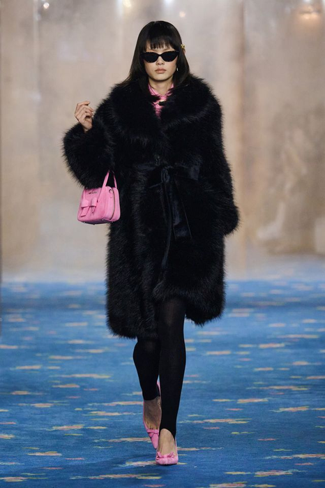
01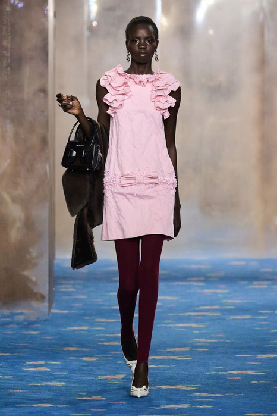
02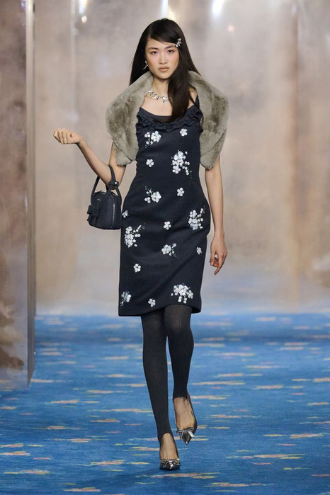
03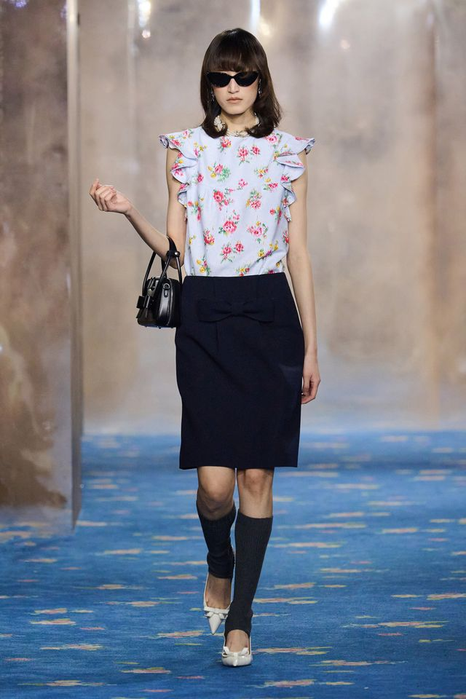
04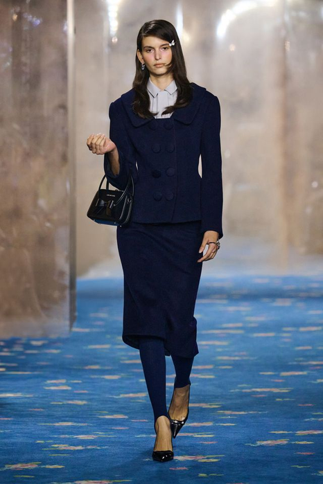
05图像：SHUSHU/TONG 2026秋冬（上海时装周）｜课堂反向分析，不代表品牌官方版型说明。
常量｜配件锁场合五套都配一只小手袋和一双深色袜。配件把整组的年龄、季节和场合固定住。
变量｜品类皮草大衣（01）→ 短连衣裙（02）→ 印花连衣裙＋小外套（03）→ 上衣＋铅笔裙（04）→ 西装套装（05）。
变量｜价位皮草最贵，套装居中，短连衣裙最易入手。一个系列必须同时给出几个价位。
角色｜梯度01 形象款；03 过渡款；02·04 引流款；05 通勤款（复穿率最高）。
课堂回答：用动作、场景、价格、搭配四项逐套追问——哪一套最经得起问？哪一套一问就散？
第1课时｜45分钟
女装设计 III · 第16周
11 设计师案例
材料贵，不等于定位高——两件事要分开说
五套用的都是可追溯材料和看得见的手工。问题是：谁付得起，多久穿一次。
Gabriela Hearst · 2027度假系列同一系列 5套｜看材料与定位
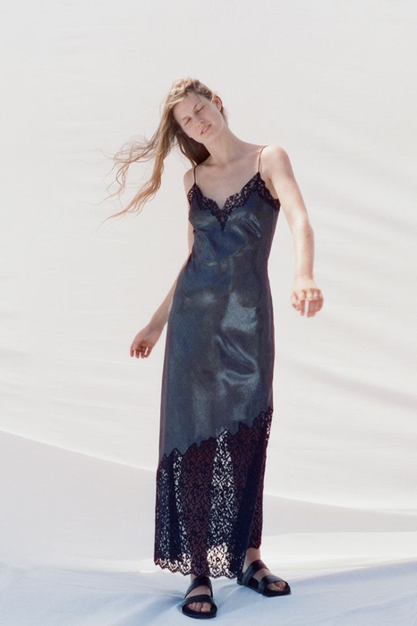
01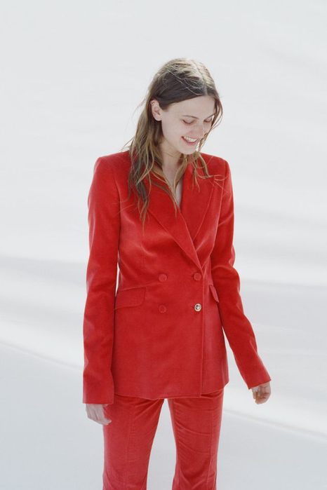
02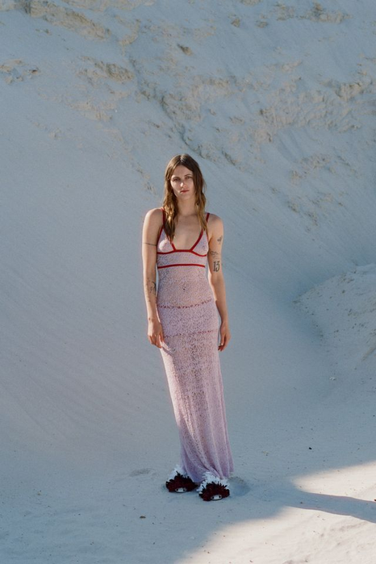
03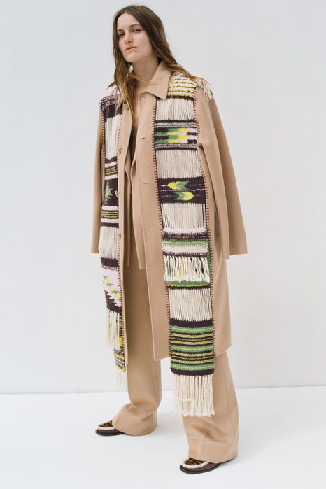
04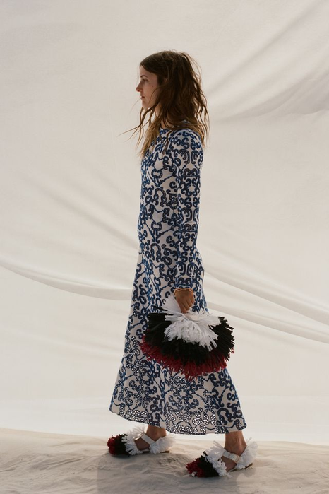
05图像：Gabriela Hearst 2027度假系列｜课堂反向分析，不代表品牌官方版型说明。
常量｜材料自带来历皮革、天鹅绒、手织流苏、蕾丝——五套都用可追溯的材料，手工痕迹全部留在表面。
变量｜品类吊带长裙（01）→ 天鹅绒套装（02）→ 珠绣长裙（03）→ 大衣＋长裤（04）→ 印花长裙（05）。
变量｜复穿率手织披肩与珠绣工时最高、场合最窄；套装和大衣可以反复穿——两类必须同时存在。
角色｜梯度03 形象款；02·04 引流款（可穿性最高）；01 与 05 承担连接，把最贵和最实穿的两端接起来。
课堂回答：这五套里哪一套最贵？你凭什么判断——材料、工时，还是它出现的位置？
第1课时｜45分钟
女装设计 III · 第16周
高校学生案例
院校实例｜《一隐一现》：从主题板到效果图，完整链条长什么样
清华大学美术学院周玉清。答辩要讲的就是这条链——主题板、材料工艺、效果图，三张之间不能断。
 四套系列效果图（点击放大）
四套系列效果图（点击放大）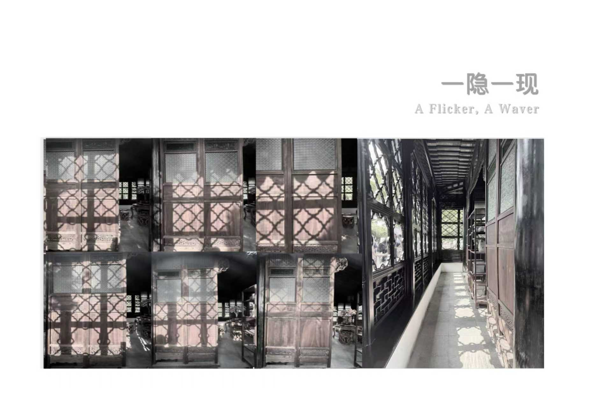
① 主题板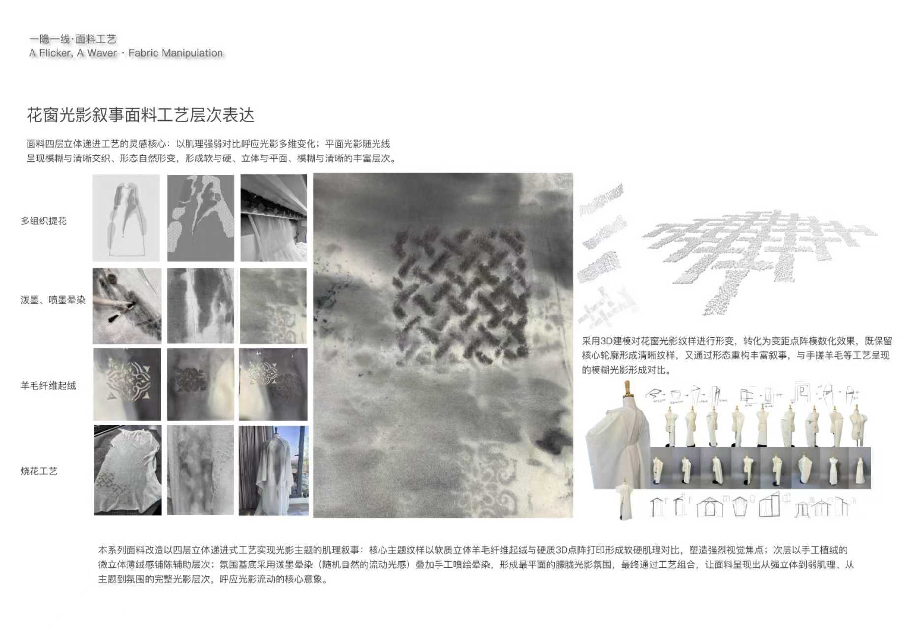
② 材料工艺对应期末第①②项主题的时代性与创意、元素提炼是否符合趋势——看的是左边两张。
对应期末第④项系列效果图的整体造型美观占二十分，看的是中间这张大图。
对应期末第⑥项风格鲜明并统一、造型搭配丰富占二十分——四套之间必须结构有别、语言一致。
答辩自查把你的三张板并排，问自己：评审只看图能不能走完这条链？断在哪一张，就先补那一张。 图源：周玉清《一隐一现》公开资料，清华大学美术学院｜仅在公开证据可验证范围内判读。
第1课时｜45分钟
女装设计 III · 第16周
纵向案例｜第5格
五格走完：现在用同一把尺子量你自己的作品
从第09周的预告到今天，我们跟着这一件作品走完了 调研→抽象→展开→表现→系列。答辩时评审在你身上找的，是同一条链。
01 第13周调研主题板
02 第13周抽象结构线
03 第14周展开受控变形
04 第15周表现效果图
05 第16周系列Line-up
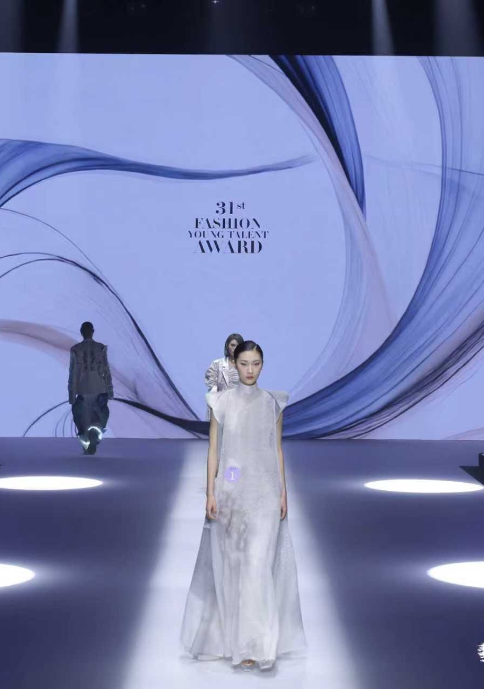
成衣 01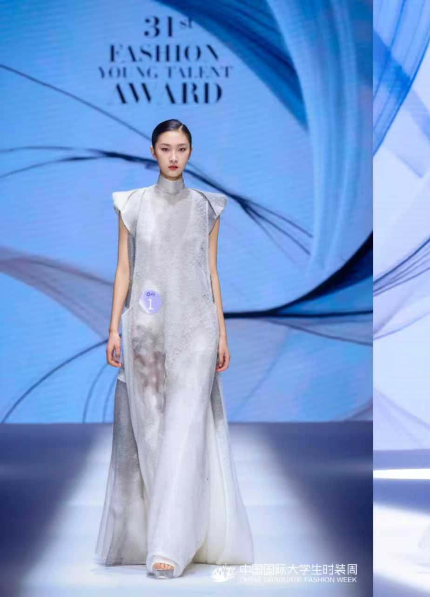
成衣 02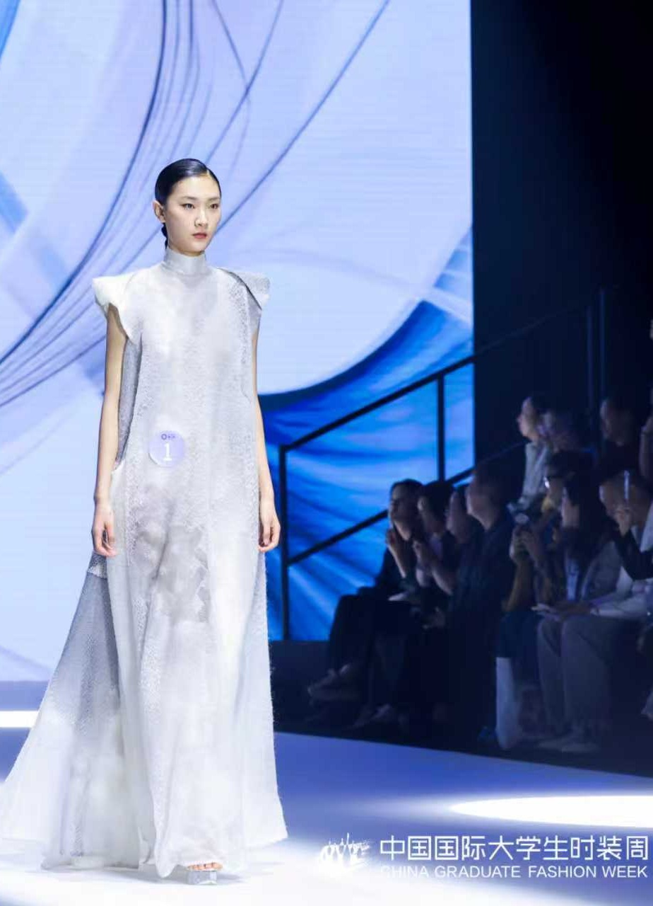
成衣 03它没有断在任何一格成衣在真实光线下，虚实差异仍然读得出来。图上成立，身上也成立。
你断在哪一格抽象说不出规则？展开只改了花色？表现里五款没有角色？逐格自查，别整体自责。
答辩只反复问一句「这一套在这里干什么」。五套要有五个不同的答案——这就是第⑥项二十分。
轮到你把你从第13周到今天的五份产出摊成一排。缺哪一格，评审就会问哪一格。 图源：周玉清《一隐一现》公开资料，清华大学美术学院官方公开页面｜仅在公开证据可验证范围内判读，未公开部分不作推断。
第1课时｜45分钟
女装设计 III · 第16周
12 第1课时检查
34分钟：把概念判断转成第一版可见输出
每个阶段结束都要留下图像、标注或修改记录。
11-19分钟
终期陈列完成编号、动线、系列板、作品集、样衣/样片和材料证据的统一陈列。
19-27分钟
正式陈述每人3分钟，不超时；主题、元素、系列、市场和价值必须完整。
27-35分钟
评委问答5分钟，以可见证据回答设计、技术、当代性和市场问题。
35-45分钟
独立评分评委按六项量表记录分数、证据和一项优先改进建议。
交接第2课时：带着评委问答记录与六项评分进入合议、反思与下一步计划。没有记录证据位置的评分，合议时不作依据。
第2课时｜45分钟
女装设计 III · 第16周
第2课时｜45分钟
从判断进入制作、编辑与反馈
第1课时完成陈列、陈述、问答与评分；第2课时进入合议、反思与下一步计划。
方法与评分依据8′ → 评分对照与Line-up定稿5′ → 考核29′ → 归档与收尾3′
第2课时｜45分钟
女装设计 III · 第16周
14 操作动词
用八个动作推进设计，不用空泛形容词
每个动作都必须产生可比较的前后版本。
01
提交核验按文件、版面、样衣/样片、来源、命名和备份清单逐项签字。
02
三分钟陈述用主题与当下、元素与实验、系列与市场、价值结论四段完成陈述。
03
证据指认回答时直接指出页码、图像、样片或技术细节，不用抽象口号替代。
04
问题复述先复述评委问题和评价维度，再给判断、证据、限制与下一步。
05
六项评分评委依据官方六项标准独立记录分数与一句证据，再进入合议。
06
反馈分类把意见分为可见事实、标准判断、技术风险、市场疑问和发展建议。
07
差距诊断比较自评分、同伴评分和评委评分，定位最大认知差距。
08
行动转化每个主要问题写成下一项目的时间点、动作、证据和完成标准。
第2课时｜45分钟
女装设计 III · 第16周
15 变量矩阵
六项标准，每一项都有一条明确的失分线
这不是变量矩阵，是评分表的反面——先看“主要风险”那一列，那是最常被扣分的地方。
| 评审维度 | 优秀证据 | 合格证据 | 主要风险 | 答辩指向 |
|---|
| 主题 | 当下且独特 | 方向清楚 | 口号化 | 为何现在 |
| 要素/审美 | 转译一致 | 应用基本 | 表面拼贴 | 如何生成 |
| 整体造型 | 系统完整 | 搭配协调 | 呈现干扰 | 为何这样呈现 |
| 市场定位 | 对象可信 | 场景明确 | 顾客虚构 | 谁会选择 |
| 系列 | 统一且丰富 | 五款成立 | 重复或漂移 | 每款角色 |
答辩前怎么用：逐行自评，先给自己定在“优秀”还是“合格”，再找出对应的证据在第几页。
答辩中怎么用：“答辩指向”那一列就是评委最可能问的问题，每一条先准备一句 20 秒的回答。
最常见的失分：口号化的主题、表面拼贴的元素、虚构的顾客——三项加起来能丢掉 40 分。
第2课时｜45分钟
女装设计 III · 第16周
16 受控实验
一次只改变一个主变量，保留可追踪依据
基准型与V1-V3必须使用相同视角、比例和标注方式。
基准型｜无口头说明
评审先用60秒只看系列板，写下主题、顾客、核心语言和最强/最弱款。
记录格式：评审的 60 秒手写记录原件收好，不要整理——原话就是证据。
V1｜三分钟陈述
加入设计者陈述，比较评审理解变化，检查哪些信息页面未能承担。
记录格式：陈述录音 + 陈述后评审重写的理解；圈出“说了才知道”的那几项。
V2｜证据答辩
加入研究、实验和技术证据，检查回答是否改变评价而非只增加故事。
记录格式：记录每个问题、你指向的页码、以及评审表情或追问是否停止。
V3｜自评对照
比较自评、同伴和评委六维分数，定位超过10分的认知差距。
记录格式：三组六维分数并列成一张表，用颜色标出差 10 分以上的格子。
第2课时｜45分钟
女装设计 III · 第16周
17 系列应用
评审会逐款问“它在这里干什么”——五个位置，五个答案
答不出某一款的任务，那一款就会被当成凑数的，直接影响“统一与丰富”那 20 分。
造型 01｜主题入口
评审能否在第一款就识别出当下命题与核心服装语言。
造型 02｜产品支撑
较易穿的一款，证明系列具备现实品类与市场延展。
造型 03｜审美核心
最强的一款，整合元素、材料、结构与当代女性身体关系。
造型 04｜跨度证明
用一个明显不同的品类或价位，证明规则不止适用于前三款。
造型 05｜系列收束
最后一款形成记忆点，并与开场产生清楚的呼应或推进。
答辩演练：请同伴随机指一款，你要在 20 秒内说清它的任务、它的证据在第几页、删掉它系列会少什么。
第2课时｜45分钟
女装设计 III · 第16周
18 评分证据定位
六项标准不重复讲，这里只回答“证据在哪一页”
评分标准见“考核依据”页；本页规定每一项分数必须能指向的具体材料，答辩时由学生自己指出位置。
时代性与创意 · 趋势性与元素
指向：研究证据图谱、命题卡、来源清单。
说不出来源的主题，这两项按最低档记。
当代女性适配 · 整体造型美感
指向：五款正背技术图、关键局部样、动作与穿脱记录。
只有效果图、没有技术图，这两项无法评。
市场与定位 · 统一与丰富
指向：产品角色表、价格层级、搭配系统与五款编排。
顾客写不具体，这两项一起失分。
第2课时｜45分钟
女装设计 III · 第16周
评分对照
把你的作品摊开，对着这六项逐条指认证据
期末一百分就是这六项。答辩前自己先走一遍——指不出证据的项，就是会丢的分。
| 期末评分项 | 分值 | 看你的哪一份材料 |
|---|
| ① 灵感和主题具有时代性与创意 | 10 | 主题来源卡、调研图谱、命题卡 |
| ② 提炼的设计元素符合当下趋势与审美 | 10 | 元素卡、形态抽象页 |
| ③ 款式设计符合当代女性审美趋势 | 20 | 穿着者画像、身体触点图、五款结构 |
| ④ 系列效果图整体造型美观 | 20 | 五款效果图（含 AI 使用记录表） |
| ⑤ 设计具有鲜明市场性和准确定位 | 20 | 产品角色梯度、Line-up 板、价格层级 |
| ⑥ 风格鲜明统一、产品造型搭配丰富 | 20 | Line-up 板 ＋ 结构变化判定的五款对照 |
第④项和第⑥项合计四十分，正好是最容易被忽略的两项——效果图的整体感，和五款之间“结构真的不同”。这两项在第11、13、15周都练过，答辩前再核一次。
第2课时｜45分钟
女装设计 III · 第16周
Line-up 定稿
Line-up 定稿：外套、内层、下装要在一张板上说完
答辩时评委先看这一张。它讲不清楚，后面讲什么都补不回来。
① 五款并排
同一视平线、同一比例、同一背景。三者任一不统一，都会让人以为你在遮掩。
统一后再看，缺陷才暴露得出来。
② 品类构成条
每款下面标出外套／上装／下装／内层／配件，用同一套图例。
空列就是系列的空缺。
③ 角色与顺序
形象款、核心产品款、过渡款、引流款标清楚，顺序即论证。
为什么第一套是它——要能答。
④ 一句话概念
整块板顶上写一句四十五字以内的概念句，和第13周那句对得上。
对不上，说明中途换过题。
答辩两分钟版本概念句 1 句 → Line-up 指认 3 句（常量、变量、角色）→ 证据 1 句（哪一套做了实物）→ 下一步 1 句。练到不看稿。
第2课时｜45分钟
女装设计 III · 第16周
19 第2课时实操
34分钟：完成实验、编辑、同伴反馈与锁定
最后5分钟必须写下下一步动作，不能只停留在讨论。
11-19分钟
同伴批评同学按同一标准写一项最清楚证据、一项未成立判断和一项可行修改。
19-27分钟
评分合议教师公开解释标准与证据类型，处理分歧但不以个人偏好替代量表。
27-35分钟
反思写作完成决定—结果—原因—迁移四栏，避免只写感受和分数。
35-45分钟
下一项目计划建立研究、实验、中期编辑、技术验证和呈现五个未来检查点。
课程结束：把六项评分证据与反思行动表带入下一次独立设计实践。没有转成下一步动作的反馈，等于没有收到。
第2课时｜45分钟
女装设计 III · 第16周
20 提交证据
提交板面必须让评审者快速找到四类证据
这是本学期最后一次提交，考核结束后不再接收任何补充材料。
最终系列全套
五款系列板、正背技术图、材料/色彩、整体造型、市场定位与完整来源。
不合格：正背技术图缺失，或来源、图注不完整——直接影响“趋势性与元素”的评分。
实践证据包
样衣或关键样片、实验前后对照、连接/材料测试和修改日志。
不合格：没有实物样片或前后对照照片，“整体造型”只能凭效果图打分。
答辩与评价归档
3分钟陈述稿、问答记录、六项评分表、同伴反馈和教师意见。
不合格：问答记录留空——合议时无从复核，分数以现场记录为准。
反思与行动表
800—1000字，含3项能力证据、3项盲点和5个下一项目检查点。
不合格：只写感受和分数，没有 3 项能力证据、3 项盲点、5 个检查点，视为未完成。
第2课时｜45分钟
女装设计 III · 第16周
21 同伴讲评
反馈只使用“证据—判断—动作”
禁止只说好看、不好看、再丰富一点。
证据
你的判断在图、样片或系列编排的哪里？
本周指向：指出是第几款、第几页；本周不接受“整体感觉”这种说法。
因果
这个形式为何回应主题、身体或市场条件？
本周指向：把判断对到六项标准中的具体一项，说出是哪 10 分或哪 20 分。
取舍
应该保留、删除、替换还是补位？
本周指向：这是最后一次批评——说清楚哪一项是这学期就该改掉的习惯。
行动
下一版具体改变哪个变量，如何验证？
本周指向：给同学写下一个项目的第一个动作，不是“继续加油”。
第2课时｜45分钟
女装设计 III · 第16周
22 终结性评价
第16周终检：最终成果是否达到课程目标的完成度
标记为“达成 / 部分达成 / 未达成”，并写下证据位置。
主题、时效性与创意 · 10%
主题明确，回应当下语境，并体现独立、非套用的创造性。
设计元素、流行趋势与审美 · 10%
元素提取与趋势研究有依据，转译形成协调而非表面拼贴。
当代女装审美 · 20%
系列体现对当代女性身体、生活方式和审美价值的理解。
整体造型 · 20%
服装、搭配、色彩、材料、姿态与呈现共同服务设计主题。
市场定位 · 20%
目标顾客、穿着场景、产品角色和市场位置清楚且可信。
统一与丰富 · 20%
五款共享明确的系列语言，同时在角色、品类、搭配与造型强度上形成跨度。
第2课时｜45分钟
女装设计 III · 第16周
23 课程归档
课程到此结束，但这套方法要能被你自己再调用一次
本学期真正带得走的不是这五款衣服，是十六周里反复用到的那几个判断动作。
归档｜完整项目文件
研究、实验、线稿、样片照片、作品集与评分反馈，按周次命名后统一备份。
求职和考研时，过程文件比成品照片更有说服力。
归档｜一份失败清单
这学期被否掉的方案与原因，整理成一页。
下一个项目开始时先读它，能省掉一半弯路。
带走｜五个检查点
研究、实验、中期编辑、技术验证、呈现——下一个项目照这个顺序自查。
这就是十六周压缩成的一张清单。
带走｜一个问题
写下“下一次独立设计，我必须先回答的是______”。
没有下周了——这一次由你自己安排时间回答。
第2课时｜45分钟
女装设计 III · 第16周
一句话小结：把本周判断写成下一步动作
“我保留 ______，因为证据是 ______；我删除或修改 ______，下一个项目将用 ______ 验证。”
01终期评价必须依据公开标准和可见证据，而不是评委的风格偏好。
02答辩的任务是证明结果如何形成、为何成立以及仍有哪些限制。
03主题、当代女装审美、整体造型、市场和系列完整度需要被同时检验。
04真正的课程结束，是把反馈转化为下一项目可以执行和验证的设计方法。